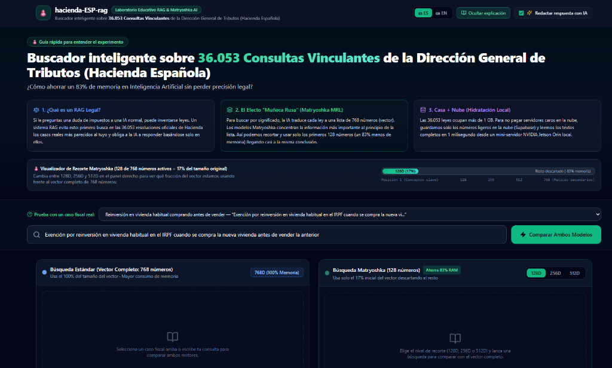

How to index 10 years of Spanish Binding Tax Rulings (1.05 GB) on a $0/month cloud footprint by slicing Google EmbeddingGemma vectors by 83.3% (768D → 128D) and hydrating full legal texts in <2ms from a local NVIDIA Jetson Orin Nano.
When a taxpayer or tax advisor asks an LLM a question about Spanish tax law (IRPF, IVA, Impuesto sobre Sociedades, Sucesiones), standard models frequently hallucinate repealed articles or confuse general statutes with binding administrative doctrine. In Spain, the Dirección General de Tributos (DGT) issues Binding Tax Rulings (Consultas Vinculantes) that legally bind the Tax Agency (AEAT).
However, building a production Retrieval-Augmented Generation (RAG) system over a full decade of official rulings (2016–2026: 36,053 documents, 1.05 GB of raw legal text) immediately hits two architectural walls:
float32(768) embeddings alongside raw text requires >6 GB of dedicated Vector RAM, immediately blowing past cloud free tiers (such as Supabase's 500 MB limit) into $70–$150/month managed vector database instances.
The live educational benchmark at hacienda.mezapps.com comparing full 768D vector retrieval against Matryoshka-sliced 128D, 256D, and 512D embeddings in real time.
The official Spanish Ministry of Finance doctrine database (PETETE / Knosys) has no public REST API or bulk dataset export. It relies on stateful server-side sessions and legacy HTML forms. To build a complete, reproducible legal corpus from 2016 to 2026, I engineered a custom asynchronous scraping and ingestion pipeline (src/scraper/dgt_scraper.py):
Built with httpx.AsyncClient and BeautifulSoup4 using exponential backoff and year/ID range partitioning. Multiple worker nodes scraped multi-year slices in parallel and merged them via merge_db.py using deterministic SHA-256 content hashes into a single SQLite WAL database.
Instead of micro-chunking, documents are segmented into 4,500-character blocks (~1,000 tokens) with a 500-character overlap, stripping repetitive administrative headers so each chunk preserves complete statutory citations and legal reasoning chains.
When a long ruling is split into multiple chunks, secondary chunks normally lose awareness of which ruling number, tax date, or governing body they belong to. Before computing embeddings on the GPU, the chunker dynamically injects a rich metadata header into every single fragment:
# Dynamic contextual prefix injected into every 4,500-char legal chunk before GPU embedding
header_prefix = (
f"[Consulta Vinculante DGT {num_consulta} | "
f"Fecha Salida: {fecha_salida} | "
f"Órgano: {organo} | "
f"Normativa: {normativa[:180]}]\n"
)
enriched_chunk_text = header_prefix + clean_legal_bodyThis single data-engineering decision reduced total vector rows from an estimated ~500,000 down to ~150,000 high-density chunks while dramatically improving retrieval precision for specific statutory articles (e.g., Artículo 38.1 Ley 35/2006 LIRPF).
In traditional embedding models (such as text-embedding-ada-002 or standard BERT derivatives), semantic information is distributed uniformly across all 768 or 1,536 vector dimensions. Dropping the last 80% of coordinates destroys the vector's meaning.
Matryoshka Representation Learning (MRL)—used to train Google's EmbeddingGemma—optimizes a nested multi-scale loss function across prefixes of the vector (128D ⊂ 256D ⊂ 512D ⊂ 768D) simultaneously during training. Just like nested Russian dolls, the neural network is forced to pack the highest-variance semantic concepts (the core tax type, transaction structure, and statutory article) into the first 128 dimensions, while dimensions 129..768 encode progressively finer syntactic nuances.
| Vector Configuration | Active Dimensions | Bytes / Chunk (float16) |
RAM for 150k Chunks | Memory Saved | Role in Legal Retrieval |
|---|---|---|---|---|---|
| Full Vector (Baseline) | 768D (100%) |
1,536 Bytes | ~230.4 MB | Baseline (0%) | Maximum nuance across all coordinates |
| Matryoshka Large | 512D (66.7%) |
1,024 Bytes | ~153.6 MB | -33.3% RAM | Near-100% Top-10 overlap with full 768D |
| Matryoshka Medium | 256D (33.3%) |
512 Bytes | ~76.8 MB | -66.7% RAM | High semantic recall at 1/3 memory cost |
| Matryoshka Core (Ultra-Compact) | 128D (16.7%) |
256 Bytes | ~38.4 MB | -83.3% RAM | Captures core tax doctrine & reaches identical LLM legal conclusions |
A full 768-dimensional embedding generated by EmbeddingGemma lies on the surface of a 768D unit hypersphere ($\|v_{1:768}\|_2 = 1$). When we slice the vector to its first $d \in \{128, 256, 512\}$ coordinates, the truncated vector $v_{1:d}$ falls inside the $d$-dimensional unit sphere ($\|v_{1:d}\|_2 < 1$). To preserve exact cosine similarity ordering via inner-product / cosine operators in pgvector, both the query vector and the database sub-vector must be L2 re-normalized after slicing:
def slice_and_normalize_mrl(vec_768: list[float], dim: int) -> list[float]:
"""
Matryoshka (MRL) prefix truncation + L2 hypersphere re-normalization.
Ensures exact cosine geometry in R^dim after slicing from R^768.
"""
sliced = vec_768[:dim]
norm = math.sqrt(sum(x * x for x in sliced))
if norm > 0:
return [x / norm for x in sliced]
return slicedOn the cloud side, rather than duplicating tables for 128D, 256D, 512D, and 768D, we store a single halfvec(768) (16-bit float) column in Supabase PostgreSQL and perform dynamic SQL sub-vector slicing inside our custom RPC function:
-- Dynamic Matryoshka slicing inside PostgreSQL pgvector (0 duplicate storage)
CASE
WHEN match_dimensions = 128 THEN
1 - (subvector(c.embedding, 1, 128)::halfvec(128) <=> query_embedding::halfvec(128))
WHEN match_dimensions = 256 THEN
1 - (subvector(c.embedding, 1, 256)::halfvec(256) <=> query_embedding::halfvec(256))
WHEN match_dimensions = 512 THEN
1 - (subvector(c.embedding, 1, 512)::halfvec(512) <=> query_embedding::halfvec(512))
ELSE
1 - (c.embedding <=> query_embedding::halfvec(768))
END AS similarityEven after compressing embeddings with halfvec and Matryoshka slicing, uploading 1.05 GB of raw legal text into a managed cloud Postgres database would immediately exceed the 500 MB Free Tier limit. To keep cloud recurring costs at $0.00/month while serving full 15-page rulings, I designed a Hybrid Edge + Cloud "Local Hydration" Architecture:
| ❌ Naive Cloud-Only RAG ($70–$150/mo) | ✅ Hybrid Edge + Cloud Local Hydration ($0/mo) |
|---|---|
Stores float32(768) vectors + 1.05 GB of raw text chunks directly inside Cloud Postgres (>3.5 GB total database size). |
Cloud Supabase stores ONLY chunk_id + halfvec numbers (0 bytes of text in the cloud; ~276 MB total footprint). |
| Transfers 45,000+ characters of legal text over the WAN on every Top-10 vector search query. | Supabase returns 10 lightweight integer IDs + cosine scores over the network in a few kilobytes. |
| Truncates context to the matched 500-char snippet, starving the LLM of the full ruling's conditions. | NVIDIA Jetson Orin Nano hydrates both the matched chunk and the entire 15-page ruling in <2 ms from local NVMe SQLite. |
When a user submits a tax question on hacienda.mezapps.com, the request reaches the Jetson Orin Nano via Cloudflare Tunnel. Local Ollama (CUDA) computes the 768D EmbeddingGemma vector once on the Jetson's Ampere GPU, then slices and L2-normalizes the selected Matryoshka prefix (128D, 256D, or 512D).
The FastAPI backend dispatches both the full 768D vector and the Matryoshka 128D vector concurrently via ThreadPoolExecutor to Supabase pgvector, retrieving the Top-10 chunk_ids and cosine similarity scores for each engine.
With the 20 integer chunk_ids in hand, the Jetson executes a single indexed primary-key JOIN against its local 1.05 GB hacienda_rag.db file on disk. In 1.2 to 2.5 milliseconds, it hydrates the exact chunk text, the complete full-length Contestación Vinculante, metadata, dates, and cited statutes.
Both hydrated legal contexts (768D and 128D) are sent in parallel to gemini-2.5-flash with a strict zero-hallucination system prompt requiring explicit citations of Consultas Vinculantes (Vxxxx-xx) and statutory articles, allowing the user to verify that the 128D (-83.3% RAM) model reaches the exact same legal conclusion.
Because the backend runs 24/7 on a physical NVIDIA Jetson Orin Nano inside a residential network and invokes paid LLM synthesis APIs, exposing it publicly required defense-in-depth engineering across the network, application, and OS layers:
Zero open ports (80/443/8000) on the home router. An outbound-only cloudflared systemd daemon connects the Jetson to Cloudflare's edge (api-hacienda.mezapps.com), providing automatic TLS termination and DDoS mitigation while hiding the residential IP.
Custom in-memory middleware inspects the cryptographic CF-Connecting-IP header to enforce a two-tier quota: 10 requests/minute (protecting the Jetson's 8 GB shared GPU RAM) and 200 requests/day per IP (preventing automated scraping or Gemini API wallet exhaustion).
User queries are strictly capped at max_length=1500 characters via Pydantic validation and wrapped inside isolated <user_query> XML tags. The system prompt explicitly instructs the model to treat everything inside <user_query> as untrusted tax facts, neutralizing instruction-override attacks.
?mode=ro)The FastAPI worker connects to the 1.05 GB legal database using a strict SQLite URI with ?mode=ro. Even in the theoretical event of an application-level vulnerability, the database file descriptor is locked read-only by the Linux kernel.
Most RAG benchmarks are static Jupyter notebooks. I built the frontend (hacienda.mezapps.com) in Next.js 16 (App Router) + Tailwind CSS as an interactive, self-explanatory laboratory:
128D (17% vector size), 256D (33%), and 512D (67%) and watch the active memory bar, byte footprint per chunk, and Recall@10 overlap update live against the 768D (100%) baseline.📄 Vxxxx-xx): Every binding ruling cited in the AI's response is parsed via regex into an interactive badge. Clicking any 📄 V0714-26 pill opens a modal displaying the complete official text of the ruling hydrated directly from the Jetson's SQLite database, with the exact chunk retrieved by the vector engine highlighted in context.🪆 128D (-83%) | 🔵 768D (100%) | ⚖️ Both) and a swipe-friendly bottom-sheet modal make the full benchmark effortless to explore on mobile devices.